Camera SelectionA Study How to Buy One Camera for the Specific Use
A Study How to Buy One Camera for the Specific Use
การศึกษาวิธีการเลือกซื้อกล้องให้เหมาะสมต่อความต้องการ
การศึกษาวิธีการเลือกซื้อกล้องให้เหมาะสมต่อความต้องการ
| Specification | Explanation |
|---|---|
| Sensor size | ขนาดของเซนเซอร์ จะมีความสัมพันธ์กับการรับภาพซึ่งจะแปลงสัญญาณไฟฟ้าเป็นสัญญาณดิจิตอลโดยขนาดของเซนเซอร์ขนาดใหญ่จะรับภาพที่มีความละเอียดได้ดีขึ้น ขนาดของเซนเซอร์จะมีขนาด1/2 ,1, 1/3 และ 4/3 นิ้ว ส่วนใหญ่เซนเซอร์ของกล้อง DSLR จะมีขนาดใหญ่กว่ากล้องแบบคอมแพค |
| Sensor type | เซนเซอร์รับภาพของกล้องดิจิตอล ส่วนใหญ่จะเป็นแบบ CMOS ซึ่งมักจะถูกใช้ในโทรศัพท์มือถือ ราคาประหยัด ถึง ปานกลาง จะมีเป็นส่วนน้อยที่ใช้เซนเซอร์รับภาพแบบ CCD ซึ่งให้คุณภาพของภาพถ่ายที่ดีกว่า แต่ราคาก็จะแพงกว่าด้วย ทั้ง CMOS และ CCD อาศัยหลักการทำงานเดียวกัน โดยอาศัย Photo-site ให้เปลี่ยนแสงที่มาตกกระทบให้กลายเป็นอิเล็กตรอน และบ่งบอกค่าสีของแสงที่มาตกกระทบ โดยทั้ง CMOS และ CCD จะประกอบไปด้วย Photo-site ขนาดเล็กนับล้านชิ้น เพื่อทำหน้าที่ในการรับแสงที่มาตกกระทบ |
| Effective pixel | ฟิกเซล(pixel) เป็นหน่วยที่ใช้สำหรับวัดค่าความละเอียดของสีภายในภาพ ซึ่งเป็นตัวบ่งบอกว่าภาพที่ได้มีความละเอียดมากหรือน้อยขนาดไหน ถ้าจำนวนฟิกเซลมีจำนวนฟิกเซลที่สูง จะทำให้ความละเอียดของภาพถ่ายสูงตามไปด้วย |
| Shutter speed | ระยะเวลาที่ยอมให้แสงผ่านเข้าไปยังฟิล์มหรือเซนเซอร์ โดยปกติกล้องใช้ระบบกลไกซึ่งเป็นม่านชัตเตอร์วางอยู่ระหว่างเซนเซอร์กับเลนส์ถ่ายภาพ ซึ่งเป็นตัวควบคุมเวลาในการเปิดและปิดเพื่อควบคุมแสง แต่ในกรณีกล้องคอมแพคหรือกล้อง DLSR จะใช้ระบบ Live View ที่ทำงานด้วยระบบอิเลคทรอนิกส์ โดยการใช้ photodiode แทนระบบกลไก ความเร็วชัตเตอร์ที่ใช้โดยส่วนมากแสดงค่าเป็นเศษส่วนของวินาที เช่น 1/2 หมายถึงม่านชัตเตอร์ยอมให้แสงผ่านเข้าไปยังตัวเซ็นเซอร์เป็นเวลาครึ่งวินาทีเป็นต้น |
| ISO sensitivity | ความไวแสงของฟิล์มหรือเซนเซอร์ซึ่ง ปกติค่าของ ISO จะอยู่ที่ประมาณ 100 จะให้ภาพอยู่ในคุณภาพที่ต้องการ การเพิ่มค่า ISO ให้สูงขึ้นจะทำให้เราสามารถถ่ายภาพที่มีแสงต่ำๆได้ดี แต่มีข้อเสียเรื่องสัญญาณรบกวนแต่ก็สามารถตั้งค่าให้อยู่ในระดับที่มีสัญญาณรบกวนต่ำได้ |
| Auto focus | เป็น mode ที่ช่วยในการถ่ายภาพ ให้มีประสิทธิภาพสูงสุดโดยสามารถปรับตั้งระบบโฟกัสได้ 3วิธี คือ การปรับปุ่มโฟกัสที่เลนส์ไปตำแหน่ง auto การเลือกแบบ focus area selection ซึ่งจะบอกว่าเราสามารถ focus area ได้กี่จุด และการเลือก auto focus mode |
| Image stabilization | ป้องกันภาพสั่นไหวของกล้อง ซึ่งจะช่วยลดปัญหาภาพเบลอเวลาถ่ายภาพเคลื่อนไหว โดยจะแบ่งเป็นสองแบบ ที่ถูกติดแต่งไว้ในเครื่องคือ software stabilizer และ hardware stabilizer กล้องดิจิตอลส่วนใหญ่ จะถูกติดตั้งไว้อยู่แล้ว |
| White balance | ฟังก์ชันนี้มีในกล้อง DSLR ทุกรุ่น ส่วนใหญ่จะมีระบบปรับไวท์บาลานซ์อัตโนมัติ ทำให้ภาพถ่ายมีสีสันถูกต้องไม่ว่าจะถ่ายภาพกลางแจ้ง หรือสภาพแสงอื่นๆ ที่มีอุณหภูมิสีแตกต่างกัน |
| Exposure compensation | เป็นการชดเชยหรือปรับเปลี่ยนปริมาณแสงที่เซนเซอร์ได้รับมากเกินไป หรือน้อยเกินไปโดยจะวิเคราะห์จากค่า Exposure (EV) โดยปกติจะสามารถปรับอยู่ในช่วง +2 ถึง -2 |
| Buffer | เป็นหน่วยความจำสำหรับสำรองไฟล์ภาพ จะช่วยในการถ่ายภาพเป็นไปอย่างต่อเนื่อง ยกตัวอย่างเช่น หลังจากที่กด ชัตเตอร์ถ่ายภาพไปแล้ว ข้อมูลภาพที่ผ่านหน่วยประมวลผลจะถูกพักเก็บได้ก่อนด้วยบัฟเฟอร์ จากนั้นจะบันทึกลงใน เมมโมรี่การ์ดต่อไป |
| File Format | ประเภทของไฟล์ที่ถูกบันทึกจะถูกบันทึกในรูปของ Jpeg และไฟล์ประเภท RAW ซึ่งจะมีข้อดีข้อเสีย คือ ความละเอียดของภาพที่ถ่าย การปรับแต่งภาพ และหน่วยความจำ ไฟล์ประเภท RAW จะมีคามละเอียดดีกว่า แต่ใช้หน่วยความจำที่มากตามไปด้วย |
| Storage Media | แหล่งเก็บข้อมูลส่วนใหญ่ที่ใช้จะเป็น SD Card โดยจะถูกแบ่งเป็น 3 ประเภทขึ้นกับความเร็วในการอ่านข้อมูลและความจุ คือ SD Standard Capacity (16GB), SD High Capacity(32GB) และ SD eXtended Capacity(2 TB)ยิ่งความเร็วในการอ่านยิ่งสูง ยิ่งราคาแพง |
| Viewfinder | Viewfinder คือช่องมองภาพเป็นกรอบ ใช้แสดงขอบเขตของภาพ โดยมีมุมรับภาพใกล้เคียงกับทางยาวของเลนส์โฟกัส ช่องมองภาพแบบ optical จะมีชุดเลนส์ที่ปรับมุมภาพให้สัมพันธ์กับเลนส์ซูมของตัวกล้อง อีกทั้งเป็นการประหยัดแบตเตอร์รี มากกว่าดูภาพจากจอมอนิเตอร์ ขนาดของ Viewfinder จะส่งผลต่อการใช้งาน หากมีขนาดใหญ่จะทำให้ง่ายต่อการมองเห็นภาพและการปรับระยะโฟกัสเพื่อเห็นรายละเอียดภาพ |
| Metering | ระบบการวัดแสงของกล้อง DLSR เป็นการวัดปริมาณแสงโดยมีเตอร์วัดแสงซึ่งจะวัดเป็นค่า Exposure value ออกมาโดยสามารถนำค่าดังกล่าวมากำหนด ค่ารูรับแสง ความเร็วชัตเตอร์ และค่า ISO ได้โดยแบ่งออกเป็น 3 ระบบ คือ การวัดแสงแบบแบ่งส่วนพื้นที่ การวัดแสงเฉลี่ยหนักกลางภาพ และการวัดแสงเฉพาะจุด |
| Shooting speed at full resolution | จะเป็นการอ้างถึงความเร็วในการกดชัตเตอร์เพื่อถ่ายภาพเคลื่อนไหวแบบต่อเนื่อง โดยจะมีหน่วยเป็นเฟรมต่อเวลา ยิ่งอัตราเฟรมต่อเวลามาก ก็จะสามารถถ่ายภาพเคลื่อนไหวได้มีประสิทธิภาพมากยิ่งขึ้น |
| Built-in Flash | แฟลชเป็นตัวช่วยสำคัญในการถ่ายภาพเมื่อเวลาไม่มีแสง หรือแสงไม่พอ เช่นเวลาตอนกลางคืน โดยปกติแฟลชจะมีสองประเภท คือ แฟลชที่ติดตั้งพร้อมตัวกล้องกับแฟลชที่ต้องซื้อมาติดตั้งเพิ่ม ซึ่งจะมีข้อดีข้อเสีย แตกต่างกันไปเช่น แฟลชที่ติดแต่งเพิ่ม เราสามารถเพิ่มแฟลชที่มีกำลังสูงๆได้ และควบคุมให้อยู่ในตำแหน่งที่เราต้องการแต่ข้อเสียคือ เสียเวลาในการติดตั้ง มีค่าใช้จ่ายที่เพิ่มขึ้น |
| Live View Shooting | การมองภาพผ่านจอ LCD โดยโหมดนี้เราสามารถมองเห็นภาพได้ตลอดเวลาแม้กระทั้งในจังหวะถ่ายภาพซึ่งกระจกสะท้อนภาพจะถูกยกขึ้นเพื่อทำให้เซนเซอร์ทำงานตรวจจับการโฟกัสภาพ |
| Movie/Movie Audio | ความสามารถในการถ่ายภาพเคลื่อนไหวและการอัดเสียงเพื่อบันทึกวิดีโอ ซึ่งส่วนใหญ่จะมี port สำหรับไมโครโฟนเพื่ออัดเสียง เป็นอุปกรณ์เสริมสำหรับผู้ที่ต้องการ อัดวิดีโอ นอกจากนี้ ยังสามารถกำหนดประเภทของไฟล์วิดีโอได้อีกด้วย เช่น HD เป็นต้น |
| Playback Functions | ความสามารถในการดูภาพย้อนหลังเช่นการเลื่อนภาพไปกลับ การ Resume แบบ Last seen และ Last shot |
| Battery/Battery Life | แบตเตอรี่สำหรับกล้องจะแบ่งเป็น 4 ประเภทคือ แบตเตอรี่อัลคาไลน์ แบตเตอรี่ NiCad(Nickle Cadmium) แบตเตอรี่NiMH และแบตเตอรี่ LiOn แต่ละแบบจะมีอายุการใช้งานที่ต่างกัน ความจุ ความทนทานของแบตเตอรี่ และพลังงานที่แตกต่างกันในแต่ละประเภท แต่แบตเตอรี่ที่ใช้กันส่วนใหญ่จะนิยม แบตเตอรี่ NiMH |
กล้องดิจิตอลในปัจจุบันมีหลายประเภท แต่แบ่งประเภทที่นิยมได้เป็น 4 ประเภทใหญ่ๆ คือ Compact, DSLR, DSLR-Like และ Mirrorless โดยทั้ง 4 ประเภทนี้จะมีข้อดี ข้อเสีย และความเหมาะสมในการใช้งานต่างกันตามความต้องการชองผู้ใช้
คือส่วนที่ใช้รับภาพแทนฟิล์ม และแปรเป็นสัญญาณดิจิตอล โดยมากเซ็นเซอร์รับภาพจะมีสองแบบคือ CCD และ CMOS โดย CCD จะให้ภาพที่ชัดและกินแบตเตอรี่มากกว่า ขนาดเซ็นเซอร์ก็มีส่วนสำคัญกับภาพโดยขนาดเซ็นเซอร์ที่ใหญ่กว่าจะได้เปรียบมากกว่าขนาดเล็ก เพราะเก็บรายละเอียดของภาพได้มากกว่า
การเลือกความละเอียดของภาพนั้นขึ้นอยู่กับว่าเรานำไปใช้งานอะไร เช่น หากถ่ายภาพแล้วอัด โดยต้องการขนาดภาพไม่ใหญ่มาก ก็ไม่จำเป็นที่จะต้องเลือกกล้องที่มีความละเอียดของภาพสูง เช่น การอัดภาพขนาดเล็ก การใช้กล้องที่มีความละเอียด 20 ล้านพิกเซล เมื่ออัดภาพมาก็ได้ภาพที่มีคุณภาพใกล้เคียงกับกล้องที่มีความละเอียด 5 ล้านพิกเซล แต่หากใช้กล้องความละเอียดต่ำแล้วไปอัดขยาย ภาพที่ได้คุณภาพจะแย่ลง
ในส่วนค่าของความลึกสีนั้น ยิ่งมากยิ่งทำให้ภาพที่ได้สมจริงมากยิ่งขึ้น โดยมากจะมี 10,12 และ 14 bit เก็บไว้ในแม่สี RGB เมื่อมีการถ่ายภาพต่างๆ ยิ่งจำนวน bit เยอะ ภาพที่ได้จะมีเฉดสีที่ต่างกันและสมจริง เช่น การถ่ายภาพวัตถุที่มีสีเขียวเข้ม กลาง และอ่อน หากใช้กล้องที่มีความลึกของสีน้อยก็อาจเห็นเป็นเพียงแค่สีเขียวโทนเดียวกันเท่านั้น
ขนาดของจอ LCD ช่วยให้เราสามารถดูภาพที่ถ่ายได้ ยิ่งจอใหญ่ยิ่งทำให้ดูภาพได้ง่าย ควรดูความละเอียดของหน้าจอด้วย ยิ่งมากภาพที่แสดงก็จะยิ่งชัด นอกจากนี้มุมในการมองก็สำคัญ เพราะทำให้เราสามารถมองภาพได้กว้างๆ เช่น 130 และ 160 องศา นอกจากนี้หน้าจอที่สามารถบิด พับ งอ จะช่วยให้เราสามารถถ่ายภาพที่มุมมองต่างๆได้ง่ายขึ้นด้วย
กล้อง DSLR หรือกล้องบางรุ่นจะสมารถถอดเปลี่ยนเลนส์ได้ โดยส่วนมากเมื่อซื้อกล้องจะมีเลนส์แถมมาให้ เรียกว่า เลนส์คิท การเลือกใช้เลนส์ให้เหมาะสมก็ขึ้นอยู่กับการนำไปใช้ด้วย เช่น การถ่ายภาพมุมกว้างๆจะใช้เลนส์ขนาดน้อยกว่า 18 มม. ส่วนการถ่ายภาพระยะไกลจะใช้เลนส์ขนาดมากกว่า 55 มม. หรือการใช้เลนส์ 18-200 มม. จะทำให้สามารถถ่ายได้ทั้งมุมกว้างและระยะไกล แต่การใช้เลนส์ที่ช่วงเลนส์กว้างแบบนี้จะได้ภาพที่ไม่ดีเท่าช่วงเลนส์แคบ ดังนั้นการใช้เลนส์ขนาด 12-24 มม. ถ่ายภาพมุมกว้างและเลนส์ขนาด 55-200 มม. ถ่ายภาพระยะไกล ย่อมได้ภาพที่ดีกว่า
ระบบนี้จะช่วยให้ภาพที่ได้นั้นมีความถูกต้องมากขึ้นไม่ว่าจะถ่ายในที่ที่มีแสงแบบไหน การถ่ายภาพในที่ร่มและที่กลางแดดจะมีอุณหภูมิสีที่ต่างกัน ทำให้ภาพที่ได้มีสีที่ผิดเพี้ยนไป ระบบนี้จึงเข้ามาช่วยปรับสีให้ถูกต้อง โดยมีทั้งระบบ Auto และ Manual
การที่มีหน่วยความจำสำรองไฟล์ภาพมากก็ยิ่งดี เพราะเมื่อเราถ่ายภาพแล้ว ภาพที่ได้จะถูกเก็บไว้ในหน่วยความจำสำรองก่อนที่จะบันทึกลงเมมโมรี่การ์ด หากเรามีหน่วยความจำสำรองเยอะเราก็จะสามารถถ่ายภาพติดต่อกันได้หลายภาพ ทำให้เราไม่พลาดภาพสำคัญต่างๆ แต่หากหน่วยความจำสำรองเต็มก็ต้องทำการบันทึกลงเมมโมรี่การ์ดเสียก่อนจึงจะถ่ายต่อได้
ISO rating คือค่าความไวแสง ในการถ่ายภาพในที่มืดและที่สว่าง จะมีการใช้ ISO rating ที่ต่างกัน หากถ่ายที่สว่างก็ควรใช้ ISO น้อย แต่หากถ่ายภาพในที่มืดก็ควรใช้ ISO ที่มากกว่า แต่ยิ่งค่า ISO มากขึ้น noise ที่ได้ก็จะมากขึ้นด้วย แต่ในกล้องก็มีการพัฒนาระบบ noise reduction ขึ้นมาเพื่อแก้ไขในส่วนนี้ ซึ่งก็ขึ้นอยู่กับกล้องแต่ละรุ่น
ในกล้องดิจิตอลจะมีระบบออโต้โฟกัสมาให้ โดยกล้องรุ่นที่ดีจะมีความเร็วโฟกัสที่มากกว่ารุ่นต่ำ และจำนวนจุดโฟกัสสามารถบอกความสามารถของกล้องได้ ยิ่งมากยิ่งดี เพราะไม่ว่าวัตถุจะอยู่ส่วนไหนของภาพก็จะสามารถจับโฟกัสได้ถูกต้องแม่นยำ จำนวนโฟกัส เช่น 7,9,11,51 จุด เป็นต้น นอกจากนี้ช่วงการปรับโฟกัสก็มีความสำคัญ หากค่า EV ต่ำ ก็จะสามารถปรับโฟกัสได้ในที่ที่มีแสงน้อย
การซุมของกล้องจะแบ่งเป็นออฟติคัลและดิจิตอลซูม โดยออฟติคัลซูมจะเป็นการซูมโดยใช้กระบวนการของเลนส์เป็นตัวซูม แต่การซูมแบบดิจิตัลเป็นการใช้ซอฟแวร์ในการซูมภาพซึ่งจะทำให้ภาพที่ได้นั้น แย่กว่าภาพที่ได้จากการใช้ออฟติคัลซูม และแน่นอนว่าเลนส์ที่สามารถใช้ออฟติคัลซูมได้สูงก็จะมีราคาที่แพงมากขึ้นไปด้วย ซึ่งการเลือกกล้องนั้นจะเลือกกล้องที่มีค่าออฟติคัลซูมสูง และดิจิตัลซูมน้อย โดยกล้องอาจจะมีการแสดงค่าการซูมว่า 20x ซึ่งอาจหมายถึง ออฟติคัลซูม 10x ดิจิตัลซูม 2x หรืออาจหมายถึงออฟติคัลซูม 5x ดิจิตัลซูม 4x ก้ได้
เป็นช่องของเลนส์ที่ให้แสงผ่าน ยิ่งมีค่ามาก รูก็จะยิ่งเล็ก การเลือกซื้อควรจะดูให้รูรับแสงมีช่วงที่ห่างกัน หรือช่วงรูรับแสงกว้าง และค่ารูรับแสงที่น้อยทำให้ถ่ายภาพในที่แสงน้อยได้ง่ายกว่า
กล้องที่สามารถถ่ายรูปแล้วพิมพ์ลงบนกระดาษ A4 ได้อย่างชัดเจนราคาไม่เกิน 5,000 บาท
| Specification | 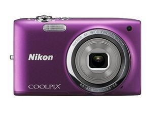 | 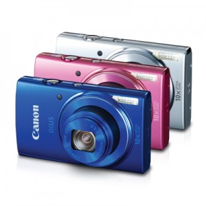 | 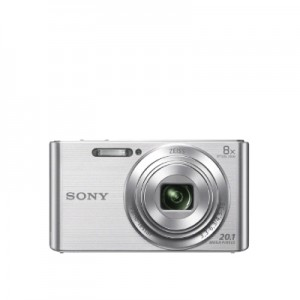 |
|---|---|---|---|
| กล้อง | NIKON COOLPIX S2700 | CANON IXUS 155 | SONY DSC-W830 |
| ความละเอียดภาพ | 16.00 Megapixels | 20.00 Megapixels | 20.10 Megapixels |
| เซนเซอร์ | CCD CMOS | CCD Super | HAD |
| ISO | ISO 80-3200 | ISO 100-1600 | ISO 80-3200 |
| ความเร็วชัตเตอร์ | 4 - 1/2000 sec | 15 - 1/2000 sec | 2 – 1/16000 sec |
| Zoom Power | Optical Zoom 6 เท่า | Optical Zoom 10 เท่า Special ZoomPlus 20 เท่า |
Optical Zoom 8 เท่า |
| Diameter Front Len | Better wide angle 26 mm. | Better wide angle 24 mm. | Better wide angle 25 mm. |
| Resolution of Screen | Higher Resolution Screen : 230k dots | Higher Resolution Screen : 230k dots | Higher Resolution Screen : 230k dots |
| Focus | Autofocus | Autofocus | Autofocus |
| นามสกุลภาพ | JPEG | JPEG | JPEG |
| SD Card | SD/SDHC/SDXC | SD/SDHC/SDXC | SD/SDHC/SDXC |
| แบตเตอร์รี่ | Li-ion Battery | Li-ion Battery | Li-ion Battery |
| ขนาดจอ | LCD 2.7 inch | LCD 2.7 inch | LCD 2.7 inch |
| น้ำหนักเฉพาะตัวกล้อง | 125 g | 142 g | 122 g |
| ขนาด | 94.8*57.8*20.8 mm. | 95.3*56.8*23.7 mm. | 93.1*52.5*22.5 mm. |
| VDO | VR System ป้องกันภาพสั่นไหว | Lens-Shift Type ป้องกันภาพสั่นไหว | Optical Steady Shot ป้องกันภาพสั่นไหว |
| Shooting Mode | Scene Auto | Selector ECO Mode | Intelligent Auto |
| Movie Resolution | Movie Mode : HD720p @ 30fps | Movie Mode : HD720p @ 25fps | Movie Mode : HD720p @ 30fps |
| อุปกรณ์ในกล่อง | Charger : MH-66 Adapter : AC EH 62-G สายสัญญาณภาพและเสียง : EG-CP14 สายคล้องกล้อง |
Battery pack : NB-11LH Adapter |
Battery pack : NP-BN Adapter : AC-UB 10C สายคล้องกล้อง |
| ราคา* | 2,990 บาท | 4,990 บาท | 4,490 บาท |
| รับประกัน | 1 year | 1 year | 1 year |
| ของแถม | SD 4GB + กระเป๋า | SD 4GB + กระเป๋า | SD 8GB + กระเป๋า |
| *ณ วันที่ 8/9/2557 | |||
กล้องถ่ายวัตถุในระยะ 3x3 เมตรเพื่อใช้ในงาน Real-time image processing จากการบันทึกจาก VDO ราคาไม่เกิน 32,000 บาท
| Specification | 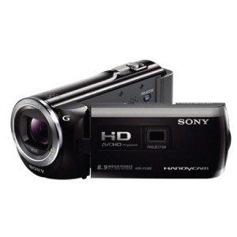 | 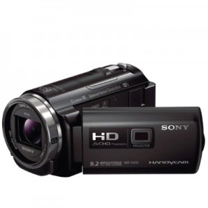 | 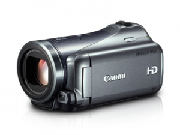 |
|---|---|---|---|
| กล้อง | SONY HANDYCAM HDR-PJ380 | SONY HANDYCAM HDR-PJ540 | CANON LEGRIA HF M400 |
| ความละเอียดภาพ | 2.51 Megapixels | 8.90 Megapixels | 2.37 Megapixels |
| เซนเซอร์ | Exmor R™ CMOS Sensor | Exmor R™ CMOS Sensor | HD CMOS Pro Sensor |
| Audio | Dolby Digital 2ch Stereo | Dolby Digital 2ch Stereo | Dolby Digital 2ch (AC-3 2ch) |
| Recording Media | SD/SDHC/SDXC | SD/SDHC/SDXC | SD/SDHC/SDXC |
| แบตเตอร์รี่ | Li-ion Battery | Li-ion Battery | Li-ion Battery |
| ขนาดจอ | LCD 3 inch | LCD 3 inch | LCD 3 inch |
| Sensor Size | 1/5.8 inch | 1/5.8 inch | 1/3 inch |
| Zoom | Optical zoom : 30x Digital zoom : 350x |
Optical zoom : 30x Digital zoom : 350x |
Optical zoom : 10x Digital zoom : 200x |
| น้ำหนักเฉพาะตัวกล้อง | 310 g | 325 g | 350 g |
| ขนาด | 57.5 x 57 x 117 mm. | 61.5 x 66.5 x 130.5 mm. | 74 x 71 x 131 mm. |
| อุปกรณ์ในกล่อง | Charger AC Adapter Battery Micro HDMI Cable USB Cable Software |
Charger AC Adapter Battery Micro HDMI Cable Software |
Charger AC Adapter Battery Micro HDMI Cable Software |
| ราคา | 24,990 บาท | 24,990 บาท | 27,990 บาท |
| รับประกัน | 1 year | 1 year | 1 year |
| ของแถม | SD 16GB + กระเป๋า | SD 16GB + กระเป๋า | SD 16GB + กระเป๋า |
ราคา: 4,090บาท
กล้อง DSLR ที่เหมาะสมหรับการถ่ายภาพวิวราคาไม่เกิม 30,000 บาท
| Specification | 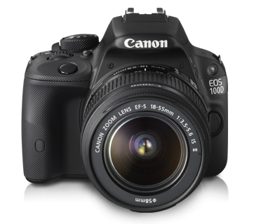 | 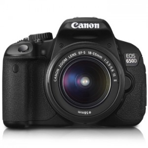 | 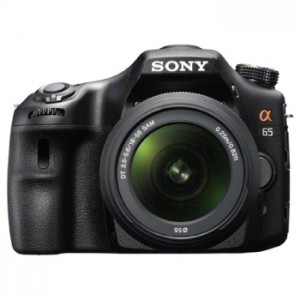 |
| กล้อง | CANON EOS 100D LENS EF-S 18-55 MM. |
CANON EOS 650D LENS EF-S 18-135 MM. |
SONY SLT-A65VK KIT 18-55 MM. |
| ความละเอียดภาพ | 18.00 Megapixels | 18.00 Megapixels | 24.30 Megapixels |
| เซนเซอร์ | Hybrid CMOS AF II | Hybrid CMOS AF | Exmor™ APS HD CMOS |
| ISO | ISO 100-12800 | ISO 100-12800 expandable to 25600 | ISO 100-16000 |
| ความเร็วชัตเตอร์ | 30 - 1/4000, Bulb | 30 - 1/4000, Bulb | 30 - 1/4000, Bulb |
| AF System Points | 9 AF Points | 9 AF Points | 15 AF Points |
| ภาพต่อเนื่องสูงสุด | 4.0 ภาพ/วินาที | 5.0 ภาพ/วินาที | 8.0 ภาพ/วินาที |
| focus | Autofocus | Autofocus | Autofocus |
| นามสกุลภาพ | JPEG, RAW, RAW + JPEG | JPEG, RAW, RAW + JPEG | JPEG, RAW, RAW + JPEG |
| SD Card | SD/SDHC/SDXC | SD/SDHC/SDXC | SD/SDHC/SDXC |
| แบตเตอร์รี่ | Li-ion Battery | Li-ion Battery | Li-ion Battery |
| ขนาดจอ | LCD 3 inch | LCD 3 inch | LCD 3 inch |
| น้ำหนักเฉพาะตัวกล้อง | 370 g | 520 g | 543 g |
| ขนาด | 116.8 x 90.7 x 69.4 mm. | 133.1 x 99.8 x 78.8 mm. | 132.1 x 97.5 x 80.7 mm. |
| VDO resolution | Movie Mode : HD720p @ 30fps | Movie Mode : HD720p @ 25fps | Movie Mode : HD720p @ 30fps |
| อุปกรณ์ในกล่อง | Charger Adapter Battery สายคล้องกล้อง |
Charger Adapter Battery สายคล้องกล้อง |
Charger Adapter Battery สายคล้องกล้อง |
| ราคา* | 20,990 บาท | 23,990 บาท | 22,990 บาท |
| รับประกัน | 1 year | 1 year | 1 year |
| ของแถม | SD 4GB + กระเป๋า | SD 4GB + กระเป๋า | SD 4GB + กระเป๋า |
| *ณ วันที่ 8/9/2557 | |||
| 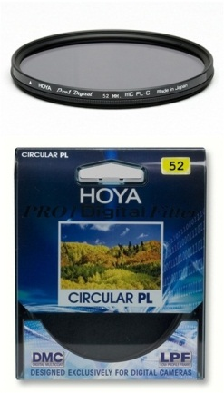 | FILTER-HOYA รุ่น PRO 1D PL-CIR 52 MM.ราคา: 1,670.00 บาท |
| 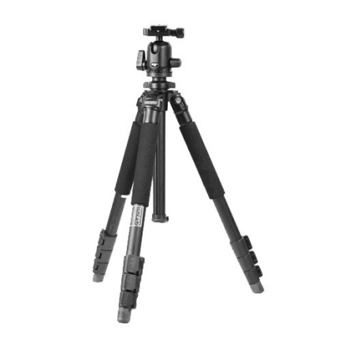 | BENRO A250F + หัว BH00ราคา: 3,255.30 บาท
|
| 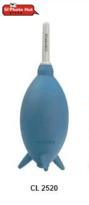 | ลูกยางเป่าลม CL 2520ราคา 351.00 บาท
|
จากการเปรียบเทียบคุณสมบัติและความเหมาะสมของกล้องดิจิตอลคอมแพ็คข้างต้น ทางกลุ่มจึงแนะนำกล้อง SONY รุ่น DSC-W830 เนื่องจาก เป็นกล้องดิจิตอลคอมแพ็ครุ่นใหม่ที่มีความละเอียดภาพสูงถึง 20.01เมกกะพิกเซลISO 80-3200 ความเร็วชัตเตอร์อยู่ระหว่าง 2-1/16000 วินาที และแฟลชอัตโนมัติขั้นสูง เหมาะแก่การถ่ายภาพหลายรูปแบบ พร้อมเลนส์มุมกว้าง 25 mm. เลนส์ ZEISS ซูมได้ถึง 8x ด้วยเซนเซอร์ CCD แบบ Super HAD ทำให้สามารถถ่ายภาพที่มีความละเอียดสูงได้โดยมีสัญญาณรบกวนที่ต่ำ จอLCDแสดงผล 2.7 นิ้ว ความละเอียด 230k-Dot Clear Photo ตัวประมวลผลภาพ BIONZ บันทึกภาพนิ่งด้วยนามสกุลไฟล์ JPEG และไฟล์วิดีโอHD 720p ที่ 30 fps นามสกุลไฟล์ AVI พร้อมฟีเจอร์ Optical SteadyShot (Active Mode) ทำให้วิดีโอ HD ปราศจากการพร่ามัวเมื่อเกิดการสั่นไหวกับกล้อง นอกจากนี้กล้องยังมีโหมด Picture Effect ที่ช่วยสร้างสรรค์ภาพถ่ายให้เป็นงานศิลป์ที่ดูสวยงาม และโหมด Sweep Panorama 360องศา ที่ทำให้ได้ภาพถ่ายPanoramicที่ดูงดงามมากยิ่งขึ้น สำหรับมือใหม่ โหมด Intelligent Auto ที่กำหนดการปรับตั้งค่าที่เหมาะสม สำหรับฉากต่างๆ จะช่วยให้ความมั่นใจว่าจะได้ภาพถ่ายที่สวยงาม ตัวกล้องมาพร้อมกับหน่วยความจำแบบ Memory Stick Duo SD/SDHC/SDXC MicroSD MicroSDHC และ MicroSDXC และช่องต่อ USB 2.0 สำหรับการเชื่อมต่อกับคอมพิวเตอร์โน้ตบุ๊กเพื่ออัพโหลดไฟล์และทำการพิมพ์ภาพ
กล้อง Sony W830 ใช้ Li-ion Battery 630mAh มาพร้อมสายชาร์จและตัวแปลงไฟ และน้ำหนักเพียง 122 กรัมในราคา 4,490 บาท รับประกัน 1ปี และของแถม Memory SD card 8GB และ กระเป๋าใส่กล้อง
ในกรณีความต้องการที่สองเกี่ยวกับภาพเคลื่อนไหวนั้น แนะนำเป็นกล้องวิดีโอ เพราะเมื่ออัดภาพเป็นเวลานาน จะสามารถเสียบประจุไฟได้ตลอดเวลาและสะดวกกว่ากล้องถ่ายรูปหรือกล้องวงจรปิดในแง่ของความจุการใข้งานผลลัพท์ของไฟล์ ความคมชัด ระยะขอบเขตของภาพที่ต้องการบันทึก และอื่นๆ
จากการเปรียบเทียบกล้องบันทึกวิดีโอในตลาดต่างๆ SONY HANDYCAM HDR-PJ540 มีราคาคุ้มค่าเมื่อเทียบกับความาสามารถของกล้องอื่นๆในกลุ่มราคาเดียวกัน คุณสมบัติบางอย่างสูงกว่าอย่างเห็นได้ชัด เช่น ความละเอียดภาพกับเซนเซอร์ และขอแนะนำขาตั้งกล้องเพื่อกันการสั่นและสามารถทิ้งให้กล้องทำงานเองได้ในระยะเวลานาน
สำหรับเรื่องของปัญหาการใ้งาน ปัญหาส่วนใหญ่ที่จะเกิดกับการบันทึกภาพเคลื่อนไหวบนกล้องวีดิโอคือปัญหาการบิดเบี้ยวของภาพ (Distortion) วิธีแก้เลนส์ดิสทอร์ชั่นสามารถแก้ไขผ่านทางวิธีการใช้กล้อง เวลาใช้เลนส์มุมกว้างถ่ายภาพหากไม่ต้องการให้เส้นแนวดิ่งสอบเข้า ก็เพียงแค่ไม่เงยกล้องขึ้น เพียงแค่รักษากล้องให้ได้ระดับ แล้วมาคร๊อปพื้นที่ส่วนล่างของภาพออก เพียงแค่นี้ก็สามารถแก้เลนส์ดิสทอร์ชั่นได้โดยไม่ยาก
สำหรับในกรณีศึกษาสุดท้าย Canon650D เป็นทางเลือกที่เหมาะสมตามความต้องการสำหรับการถ่ายรูปวิวทิวทัศน์ นอกจากนั้น Canon650D ยังใช้งานง่าย คุณสมบัติเหมาะสมกับราคา และคุณสมบัติยอดเยี่ยมสำหรับมือสมัครเล่น โดยแนะนำให้ซื้อฟิวเตอร์ที่ช่วยการกรองแสง เพื่อได้ภาพที่มีสีคมชัด ขาตั้งกล้องเพื่อช่วยกันสั่น เมื่อต้องถือกล้องนานๆ และอุปกรณ์ดูแลทำความสะอาดกล้อง
สำหรับร้านที่แนะนำคือร้าน WorldCamera และ PhotoHut เนื่องจากจะได้ของแถมและ promotion เพิ่มเติมมากกว่าร้านอื่นๆ ทั้งการอบรมการถ่ายภาพ ลดราคา และอื่นๆ
กล้องในปัจจุบันมีความหลากหลายมากกว่าในอดีต ทำให้ต้องใช้การวิเคราะห์พิจารณาก่อนการเลือกซื้อ จุดสำคัญที่สุดคือการกำหนดการใช้งานของกล้องอย่างชัดเจน และการรู้ถึงคุณสมบัติและรายละเอียด (Specification) ของกล้องซึ่งได้แสดงข้อมูลพื้นฐานที่จำเป็นมาประกอบแล้วก่อนหน้านี้ ยิ่งเข้าใจในการทำงานและคุณสมบัติต่างๆของกล้องได้ก็จะช่วยให้การเลือกซื้อเป็นไปอย่างราบรื่นรวดเร็วยิ่งขึ้น อย่างไรก็ตามควรมีการศึกษาข้อดีข้อเสียการใช้งานหลังการซื้อจากผู้ใช้ต่างๆ โดยเฉพาะอย่างยิ่งข้อมูลที่ได้มาจากผู้ใช้งานที่มีประสบการณ์หรือผู้เชี่ยวชาญเฉพาะจะมีความน่าเชื่อถือสูงกว่าข้อมูลการตลาดจากการโฆษณาและผู้ขาย
การเลือกซื้อกล้องตามการใช้งานด้วยความสามารถและรายละเอียดของกล้องก่อนการซื้อจริงนั้นไม่เพียงพอ จำเป็นต้องมีการศึกษาปัญหาข้อดีและข้อเสียหลังจากใช้งานจริง ซึ่งสามารถนำข้อมูลเหล่านี้มาได้จากทั้งการสัมภาษณ์ บทความออนไลน์ต่างๆที่แบ่งปันประสบการณ์จากใช้งานกล้องแต่ละตัว หรือจากการสอบถามการวิเคราะห์ของผู้เชี่ยวชาญ ด้วยข้อมูลทั้งสองทางทั้งก่อนการซื้อและหลังการซื้อจะทำให้ผลลัพท์การเลือกซื้ออกมาตรงตามการใช้งานและให้ผลต่อความพึงพอใจในการใช้งานมากที่สุด
[1] วิชัย พรเศรษฐ์ถาวร HonFBPS [homepage on the Internet]. กล้องดิจิตอลชนิด D-SLR (Digital-Single Lens Reflex) [cited 2013 Sep 12]. Available from: http://www.bpsthai.org/BPS_Links/PhotoTechnic_L/DigitalCamera_L/06Camera_DSLR.html
[2] BIG Camera [homepage on the Internet]. รู้จักกับ...Image Sensor [cited 2013 Sep 12]. Available from: http://www.cancer-pain.org/
[3] compact-dslr [homepage on the Internet]. ไฟล์รูปภาพ ใช้ฟอร์แมทแบบไหนดี [cited 2013 Sep 12]. Available from: http://compact-dslr.com/index.php/basic-camera/59-photos-format-type
[4] Klongdigital.com [homepage on the Internet]. ความรู้เบื้องต้นในการ เลือกซื้อ เมมโมรี่ SD CARD [cited 2014 Sep 12]. Available from: http://www.klongdigital.com/column/column10
[5] inonnp [homepage on the Internet]. ระบบป้องกันภาพสั่นไหว [cited 2014 Sep 12]. Available from: http://forum.fujifilm.co.th/archive/index.php?t-11601.html
[6] nakhonphanomphotoclub [homepage on the Internet]. กล้องดิจิตอล คืออะไร การทำงานของกล้องดิจิตอล [cited 2014 Sep 12]. Available from: http://www.nakhonphanomphotoclub.com/nakohnphanom/digital-camera-01.php
[7] Thaimobilecenter Editor [homepage on the Internet]. เซนเซอร์รับภาพแบบ CMOS และ CCD ต่างกันอย่างไร? (เพิ่มเติม) [cited 2014 Sep 12]. Available from: http://www.thaimobilecenter.com/home/mobile_tips_detail.asp?nid=84
[8] samsung [homepage on the Internet]. กล้องคอมแพค : ช่อง Viewfinder มีไว้ทำอะไร [cited 2014 Sep 12]. Available from: http://skp.samsungcsportal.com/integrated/popup/FaqDetailPopup3.jsp?cdsite=th&seq=74617
[9] SHUTTER PHOTOGRAPHY [homepage on the Internet]. คู่มือเลือกซื้อกล้อง DSLR 2007 [cited 2014 Sep 12]. Available from: http://www.thecameracity.com/article_inside.php?articles_id=150
[10] Snapsort [homepage on the Internet]. Affordable Digicams with a Flash [cited 2014 Sep 12]. Available from: http://snapsort.com/learn/flash-exists